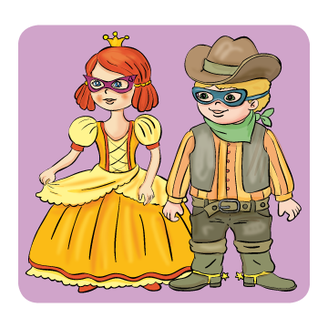
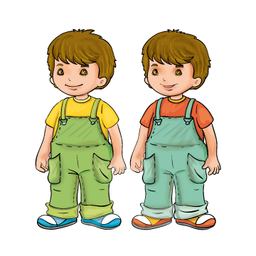

8
. Olvasd el a név-párokat! Csoportosítsd a névtáblákat aszerint, hogy fiú- és lánynév, vagy két fiúnév van rajtuk! (Az egérrel húzd a szavakat a megfelelő házikóba!)


Anita és Aladár
Domi és Dani
Peti és Pali
Dalma és Dénes
Panni és Pali
Ildikó és István
Ödön és Sámuel
Timi és Tomi
Ádám és Iván
Andi és Nándi
Tamás és Ábel